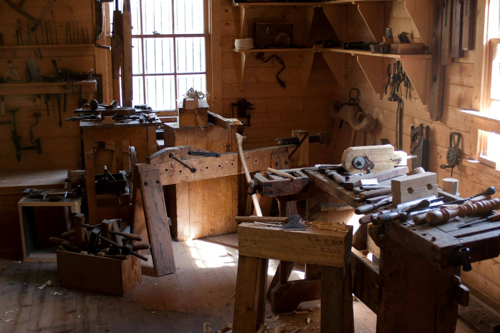
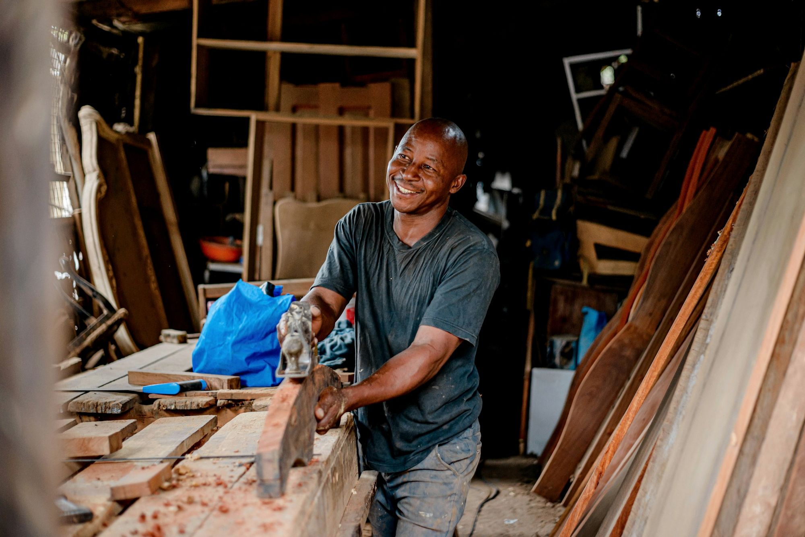
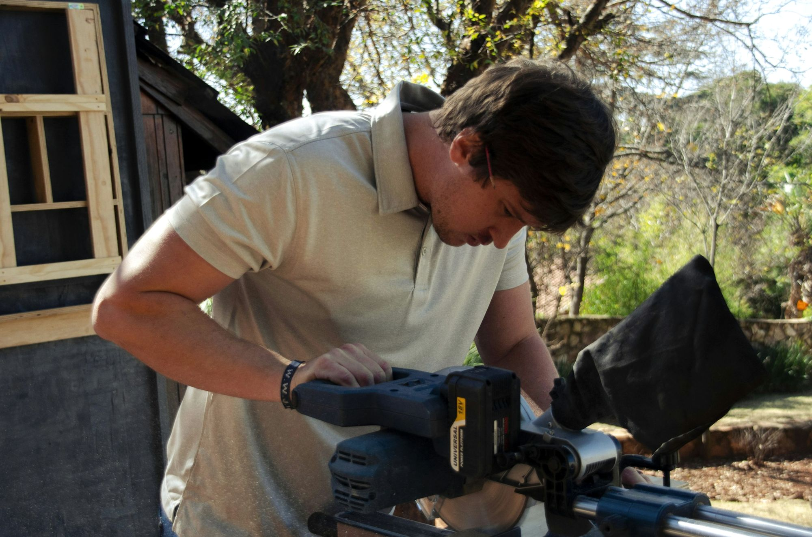
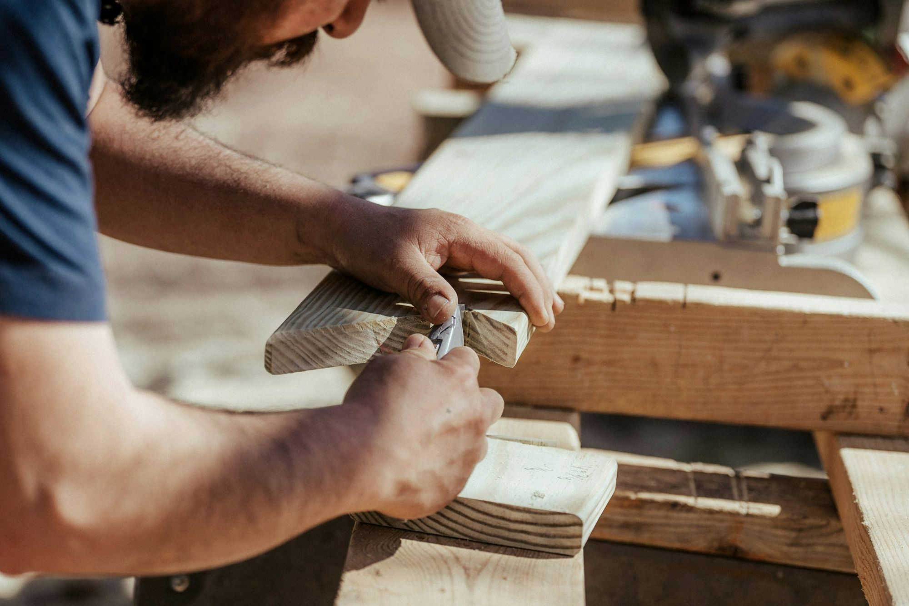

Cuisines, fenêtres, escaliers : fabriqués dans notre atelier d'Ambert.
L'Atelier Chevarin conçoit, fabrique et pose depuis 1998, du plan à la dernière vis.

Ce que fabrique l'atelier.

Cuisine
Projet complet avec visualisation 3D, meubles, plan de travail, équipements.

Fenêtres et volets
Pose en aluminium, mixte, bois ou PVC, et menuiserie extérieure.

Escaliers et menuiserie intérieure
Escalier fabriqué sur mesure, portes, placards, finitions.

Dressing et parquet
Aménagement intérieur et pose de parquets.

Ce qui se fait dans l'atelier.
- Conceptionétude et conseils personnalisés
- Fabricationmenuiseries françaises sur mesure
- Poseréalisée par nos propres équipes
- Cuisinevisualisation 3D avant de commencer
- Showroomaccueil et conseil
Du dessin à la pose, quatre temps.
- 01Étude et conseils
Une étude personnalisée du projet, avec conseils sur les matériaux.
- 02Visualisation
Pour une cuisine, un rendu 3D réaliste avant la fabrication.
- 03Fabrication à l'atelier
Menuiseries françaises sur mesure, conçues et fabriquées à Ambert.
- 04Pose par nos équipes
Réalisée dans les règles de l'art, par l'atelier lui-même.

Des mains, du bois, des machines.




Menuisiers au travail : photos libres de droits, elles ne montrent pas l'équipe de l'Atelier Chevarin.
Autour d'Ambert, dans le Livradois.
Questions fréquentes.
Fabriquez-vous vos menuiseries ?
Oui. L'atelier conçoit et fabrique des menuiseries françaises sur mesure, puis les pose avec ses propres équipes.
Pouvez-vous voir ma cuisine avant de la fabriquer ?
Pour l'aménagement de cuisine, un projet complet est présenté avec une visualisation 3D réaliste.
Quels types de fenêtres posez-vous ?
Des fenêtres en aluminium, mixtes, en bois ou en PVC, ainsi que des volets.
Fabriquez-vous des escaliers ?
Oui, des escaliers sur mesure, avec la menuiserie intérieure.
Où se trouve le showroom ?
À l'Atelier Chevarin, à Ambert : l'équipe y accueille et conseille les clients.
Dans quelles communes intervenez-vous ?
Autour d'Ambert : Marsac-en-Livradois, Arlanc, Bertignat, Saint-Amant-Roche-Savine, Marat, Vertolaye, Job, Saint-Germain-l'Herm, Viverols.
Un escalier, une cuisine, des fenêtres ?